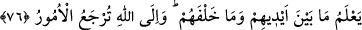

taraftan alıp diğer tarafa ulaştıran kimselerdir. Onların halkın işleriyle ilgilenmeleri
Hak cânibine tamamen yönelmelerine (tebettül) engel olmaz. Kendilerine indirilenle
halkı Allah Teâlâ’ya çağırırlar ve onlara O’nun gönderdiği şer‘î esasları ve hükümleri
öğretirler.
“Şüphesiz Allah” işitilecek her şeyi “işitendir,” Kâşifî der ki: “Peygamberlerin
tebliğleri sırasında söylediklerini işitendir” “görendir.” görülecek her şeyi idrâk eder.
Söz ve fiillerden hiç bir şey O’na gizli kalmaz. Kâşifî der ki: “Peygamberlerin
ümmetlerinin dâveti red ve kabul konusunda durumlarını görendir.”
et-Te’vîlâtü’n-Necmiyye’de der ki: “Allah, onlar ademde oldukları halde varolma
ihtiyacı içindeyken yakarışlarını işiten, yok olduğu halde kimin risâlete müstehak
olduğunu görendir.”
76. Onların önlerindekini de, arkalarındakini de (yaptıklarını da, yapacaklarını
da) bilir. Bütün işler Allah’a döndürülür.
“Onların önlerindekini de, arkalarındakini de bilir.” Eşyânın geçmişini de gelecekte
olması beklenen durumlarını da bilendir. Kâşifî der ki: “İnsanların önünde olan şeyi,
yani yaptıkları amelleri bilir. Arkalarında olan şeyi, yani yapacakları işleri de bilir.”
“Bütün işler” ne müşterek ne de müstakil olarak başka birine değil, sadece “Allah’a
döndürülür.” Çünkü onların bizzat mâliki O’dur. Elçilerini seçme ve diğer hususlarda
yaptıklarından hesaba çekilmez. Onlar ise hesaba çekilirler.
Rivâyet olunur ki adamın biri Hz. Hüseyin’in oğlu Zeynelâbidîn Ali (r.h.) hakkında
ileri geri konuştu ve ona iftirâda bulundu. Zeynelâbidin (r.h.) o kimseye şöyle dedi:
“Ben senin dediğin gibiysem Allah’a istiğfar ederim. Eğer senin dediğin gibi değilsem
o takdirde Allah seni mağfiret buyursun.”
Bu sözler üzerine adam kalktı. Zeynelâbidîn (r.h.)’ın alnını öptü ve “Sana canım feda
olsun, sen benim dediğim gibi değilsin. Beni bağışla.” dedi.
Zeynelâbidîn (r.h.) da “Allah seni bağışlasın.” dedi.
Bunun üzerine adam: “Allah, peygamberliğini kime vereceğini çok iyi bilir.” (el-
En‘âm, 6/124) dedi.
Yine Zeynelâbidîn (r.h.) bir gün mescidden çıktı. Karşısına bir adam çıktı ve ona
sövdü. Bunun üzerine köle ve âzâdlıları adamın üzerine yürüdüler. Zeynelâbidîn (r.h.)
onlara “Adamın üzerine varmayın, sâkin olun.” dedi. Sonra adama yönelerek: “Bizim
hakkımızda sana gizli kalan, yani senin bilmediğin daha çok kusurumuz var. Bir ihtiyacın
varsa o konuda sana yardım edelim.” dedi. Bunun üzerine adam utandı. Zeynelâbidîn
(r.h.) üzerindeki elbiseyi adama verdi ve ona bin dirhem verilmesini emretti. Bundan
sonra adam şöyle diyordu: “Şehâdet ederim ki sen Hz. Peygamber (s.a.)’in